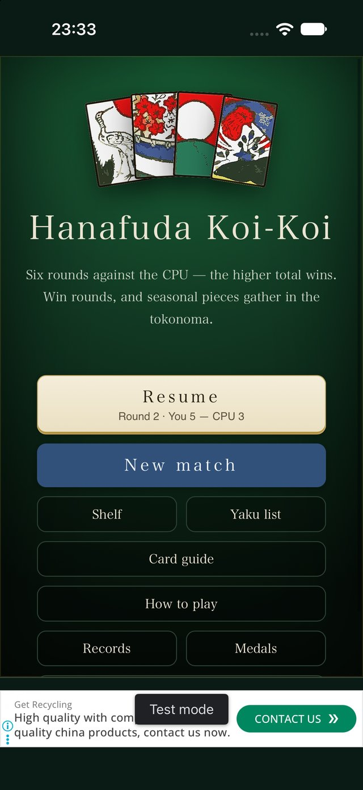
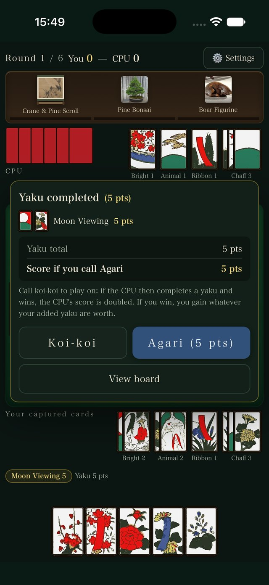
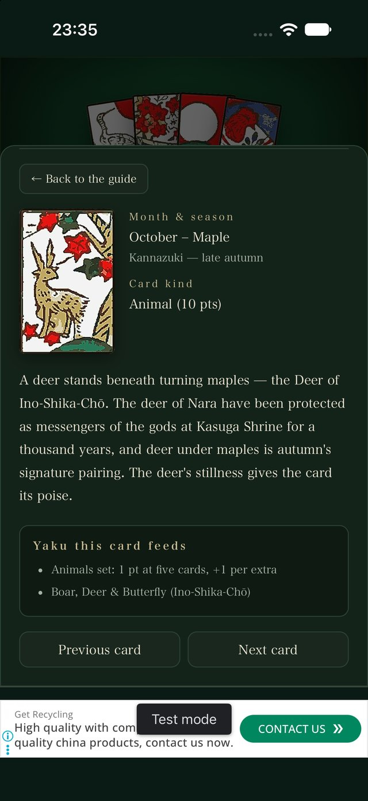
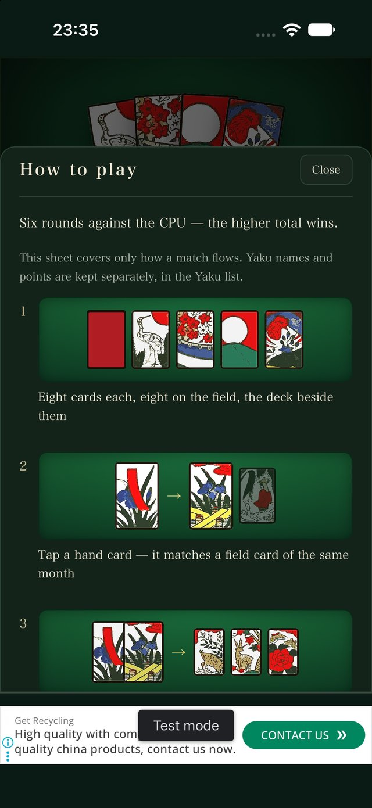

Features
-
No ads interrupting your matches
No ad videos interrupt your matches. The only ads shown are banners at the bottom of the screen.
-
Card art from a 1910 plate
The card faces are based on an illustrated plate published in 1910. Play with the classic hanafuda artwork, just as it was.
-
Six-round matches against the CPU
Matches against the CPU run six rounds, decided on total points. With selectable difficulty, everyone from first-timers to seasoned players can enjoy the game.
-
47 seasonal decorations
Win matches and seasonal decorations gather in your tokonoma alcove. There is a quiet pleasure in collecting all 47, a few at a time.
-
Play offline
Matches play with no connection at all. Keep going on the move, or wherever the signal cannot reach.
-
No sign-up, no in-app purchases
No account registration, and no in-app purchases. Open the app and play right away.
Screenshots




What is Koi-Koi?
Koi-Koi is the best-known game played with hanafuda cards. You match cards in your hand with field cards of the same month to capture them, and build scoring combinations — yaku — from the cards you take. The first to complete a yaku wins the round — but instead of stopping there with “agari”, you can call “koi-koi” and play on, aiming for an even bigger score.
Push on and your score can grow — but if your opponent completes a yaku first, you lose the round. That push-and-pull is the heart of Koi-Koi. In this app, matches against the CPU run six rounds, decided on total points.
- Moon Viewing (Tsukimi de Ippai)
- Flower Viewing (Hanami de Ippai)
- Boar, Deer & Butterfly (Ino-Shika-Chō)
- Red & Blue Ribbons (Akatan · Aotan)
How to Play & the Yaku
-
How to play Koi-Koi
The flow of a match, explained with diagrams — terms such as basan, hikofuda and teshi, how scoring works, and how redeals are handled.
-
Yaku list & points table
All 12 yaku — Five Brights, Rainy Four Brights, Boar, Deer & Butterfly, Red Ribbons, Blue Ribbons and more — with their points and pictures of the cards that make them.
Hanafuda Stories
- In the film Summer Wars (2009), the climax turns on a match of Koi-Koi.
- Nintendo was founded in 1889 making hanafuda cards, and at the Nintendo Museum in Uji you can try making hanafuda yourself.
- In Demon Slayer, the hero's earrings are modeled on hanafuda designs, bringing the card art to a younger generation.
- The Like a Dragon (Yakuza) series features Koi-Koi as a playable minigame.
- Hanafuda has long been a New Year pastime, played when family and relatives gather.